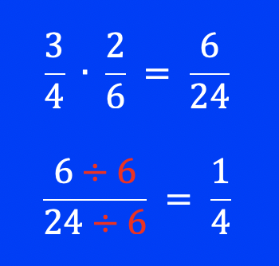
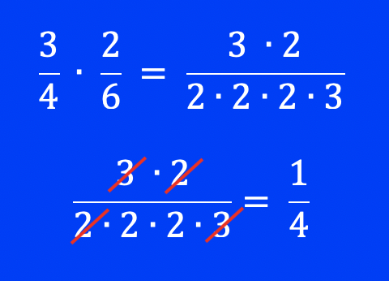
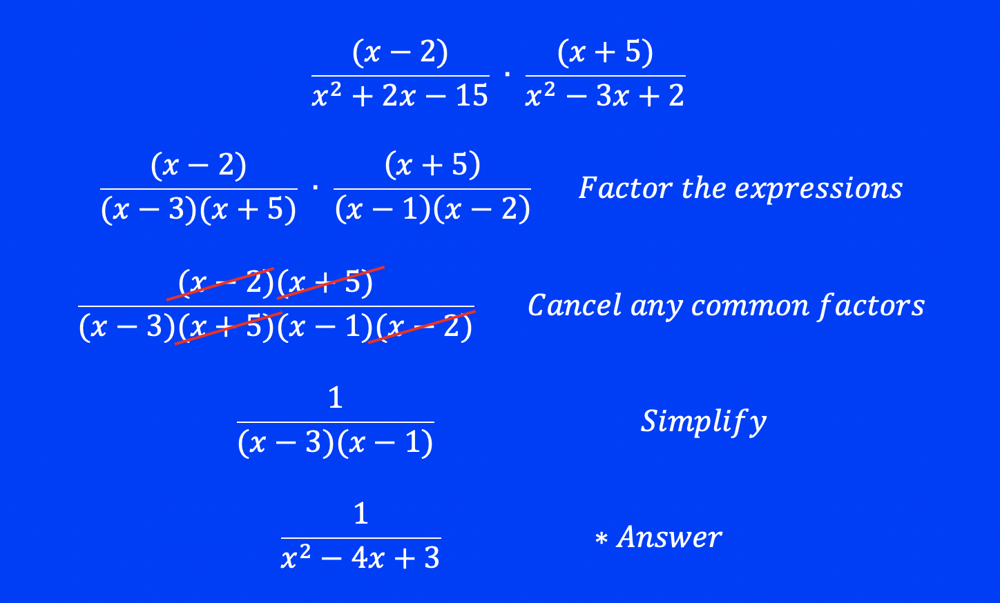
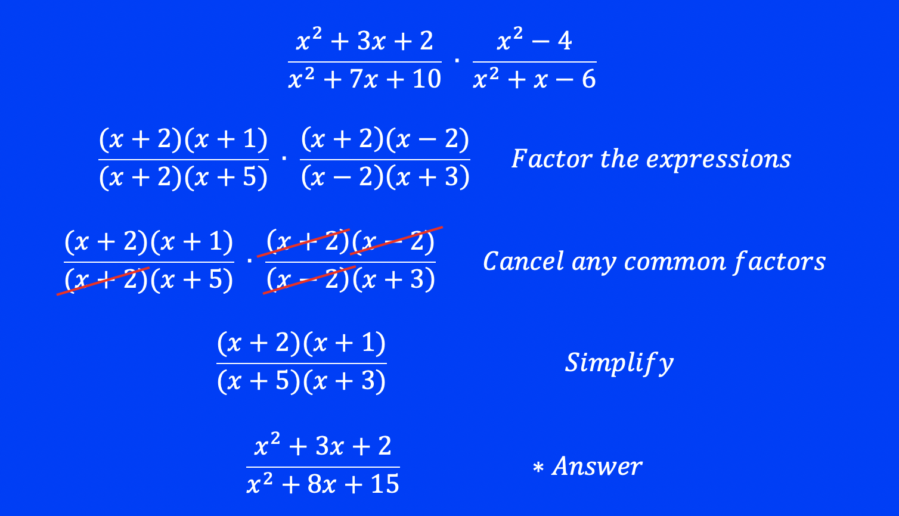
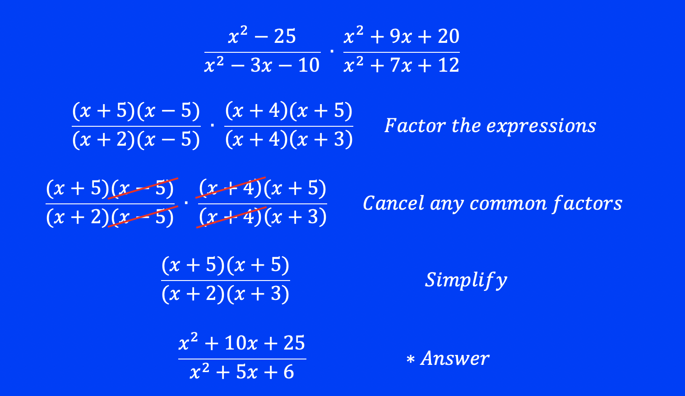

In this unit we will learn how to multiply rational expressions. Please review the unit on Simplifying Rational Expressions before starting this unit.
Multiplying rational expressions follows the same rules for multiplying fractions. Multiply across the top to get the numerator, and multiply across the bottom to get the denominator. Then simplify the fraction if possible.
Example:

Another way to do the same problem is to factor each number first, canceling out any common factors, then multiplying the remaining numbers together. For example:  Either way, we get the same answer.
When multiplying rational expressions, we will factor first and then simplify after any common factors have been cancelled out. It is easier and faster to do it this way.
Example 1: Simplify:

Any factors remaining after being simplified must be multiplied back together using FOIL:
(x - 3)(x - 1) = x2 - 4x + 3.
Example 2: Simplify:

Any factors remaining after being simplified must be multiplied back together using FOIL.
Example 3: Simplify:

Any factors remaining after being simplified must be multiplied back together using FOIL.